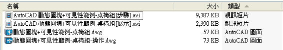

1.論壇之前有陸續分享動態圖塊的相關教學範例，今天特別結合以下二種需求，可以讓動態圖塊有更多的彈性及變化~
[影片]動態圖塊展示-拉伸及陣列動作
https://www.autocad-tw.com/t4127-topic
[影片]動態圖塊-可見性圖塊
https://www.autocad-tw.com/t4047-topic
2.有興趣的朋友可以加入一同練習，建議先不要看我的製作範例步驟，試試看您自己是否有辦法做出來，靠自己做出來比較有成就感喔~
桌椅組範例效果展示:
請記得說明以下事項(參與練習的朋友將獲得 威望值+6):
1.PO上範例完成影片
PS:若無法po影片可將DWG圖檔上傳(供測試檢核)
2.範例所用到的指令(約略說明即可)
3.使用的AutoCAD版本
4.範例所需時間
5.您的意見補充
桌椅組製作範例步驟：
*專屬會員朋友請到以下版區下載[檔案]可見性範例-桌椅組(圖檔及影片).zip

專屬資源下載:
https://www.autocad-tw.com/t10252-topic
2011-06-29補充:基準點及對齊參數
1.因為原始圖塊的插入點在中央，在插入圖塊時不是很好用，此時可以加入 基準點參數 將圖塊插入點改為左邊。
再來可以再加入 對齊參數，好處是可以跟著牆面貼齊，這樣可以省去旋轉的動作喔~
2.為了滿足其他圖檔也可以插入此 桌椅組(動態圖塊)，這時就可以使用 設計中心(Ctrl+2) 搭配 工具選項板(Ctrl+3)
也就是把您的圖塊建立到圖塊庫(請自行新增資料夾擺放)，日後陸續增加的圖塊也可以放置在這個資料夾
再來以後就可以使用 工具選項板(Ctrl+3) 輕鬆插入 桌椅組(動態圖塊)，這樣是不是很讚呢~
*專屬會員朋友請到以下版區下載[檔案]可見性範例-桌椅組 加入基準點及對齊參數(圖檔及影片).zip
專屬資源下載:
https://www.autocad-tw.com/t10252-topic
相關延伸閱讀文章:
AutoCAD 2D 動態圖塊入門
https://www.autocad-tw.com/t4879-topic
[分享]動態圖塊-圖塊表格運用
https://www.autocad-tw.com/t5948-topic
[教學]動態圖塊